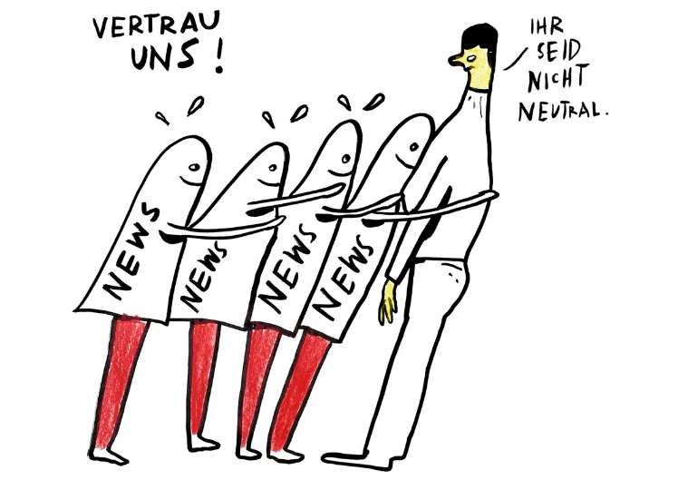

Tipp 2: Quelle überprüfen - Was ist damit gemeint

Quellen im Sinne von 'Quellenarbeit' zu überprüfen, mag im ersten Moment aufwändig und langwierig klingen. Gemeint ist jedoch keine umfassende Untersuchung, sondern das Erlangen einer schnellen, ersten Einschätzung. Wichtig ist, dass du zu einer ersten Einschätzung kommen kannst, bevor du dich überhaupt näher mit einer bestimmten Information auseinandersetzt. Auf diese Weise kannst du die Information von Anfang an besser einordnen.
Ein paar Beispiele zur Veranschaulichung:
- Du findest einen Artikel über gesunde Ernährung. Die Untersuchung der Quelle ergibt, dass er vom Vegetarierbund Deutschland geschrieben ist.
- Du schaust dir ein Video über Braunkohleabbau in der Lausitz an. Die Untersuchung der Quelle ergibt, dass der Ortsverband der SPD das Video gedreht hat.
- Du liest eine Rezension zu einem neuen Kinofilm. Die Untersuchung der Quelle ergibt, dass sie aus dem Cinestar-Magazin stammt.
Diese Beispiele verdeutlichen, dass dir die Untersuchung der Quelle nichts dazu sagt, ob die Information richtig oder falsch ist. Sie sagt auch nichts darüber aus, ob ein bestimmtes Anliegen berechtigt ist oder nicht. Sie hilft dir aber dabei, die Information zunächst für dich einzuordnen. Denn natürlich ist es ein Unterschied, ob - um das erste Beispiel aufzugreifen - der Vegetarierbund Deutschland, der lokale Obsthandel, eine Supermarkt- oder aber eine Fastfoodkette über gesunde Ernährung schreibt. All diese Akteure werden zum Teil recht unterschiedliche Perspektiven auf das Thema gesunde Ernährung haben. Mit dem Wissen über Absender oder Absenderinnen, wirst du die Informationen beim Lesen für dich entsprechend einordnen können.
Wie kann ich die Quelle untersuchen?
Um die Quelle zu untersuchen, kannst du den sogenannten 'Wikipedia-Trick' verwenden.